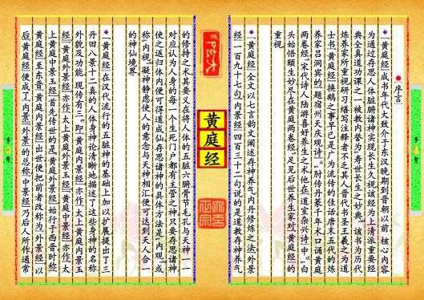
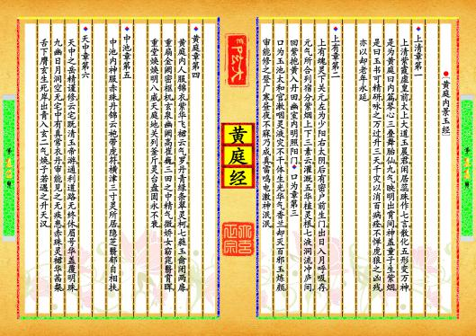
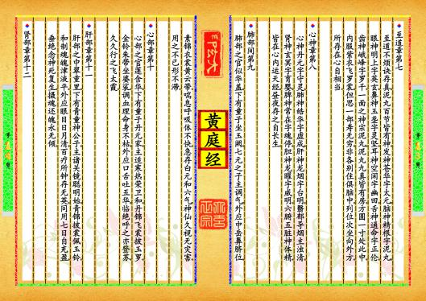
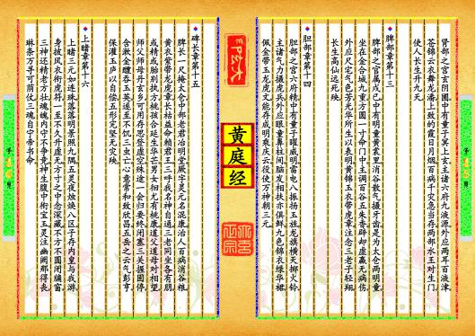

-
第【1-2】页 ▎⚫〔序言〕▼《黄庭经》成书年代大致介于东汉晚期到晋朝以前。▂核心内容为通过存思人体脏腑诸神实现长生久视。该经为上清派重要经典，全真道功课之一，被教内誉为“寿世长生之妙典”。▂该书为历代炼养家所重视，研习、缮写、注释者不乏其人。晋代书圣王羲之为道士书《黄庭经》换鹅之事，早已是广为流传的佳话。唐末五代的炼养家吕洞宾的《题宿州天庆观诗》云，“肘传丹篆千年术，口诵黄庭两卷经。”宋代诗人陆游喜好养生之术，他在《道室杂兴诗》中说，“白头始悟颐生妙，尽在黄庭两卷经。”足见后世养生家对《黄庭经》的重视。▼《黄庭经》全文以七言韵文阐述存神养气、内丹修炼之法，《外景经》一百九十七句，《内景经》四百三十二句，说的是道教存神养气的修持之术，其要义在将人体的五脏六腑、骨节毛孔与天神一一对应，认为人身的每一个生死门户都有主管之神，只要存思诸神，使之返归体内，便可得道成仙。存思诸神的具体方法是“内观”，或称“内视”，凝神静虑，使人的意念与天神相汇，便可达到天人合一的神仙境界。▂▼《黄庭经》在汉代流行的五脏神的基础上加以扩展，提出了三丹田、八景、十二真的人体身神论，清晰地描述了这些身神的名称、外貌及功能。▂现传有三种，即《黄庭内景经》，亦作《太上黄庭内景玉经》；《黄庭外景经》，亦作《太上黄庭外景玉经》；《黄庭中景经》，亦作《太上黄庭中景玉经》。首先传世的是《黄庭外景经》，始行于西晋，时称《黄庭经》。至东晋《黄庭内景经》出世，便把前者改称为《外景经》。以后《黄庭经》便成了《内景》《外景》的总称。《中景经》乃后人所作，通常预览书籍 全文配置
-
第【11-12】页 ▎⚫〔黄庭内景玉经〕▼上清章第一上清紫霞虚皇前，太上大道玉晨君，闲居蕊珠作七言，散化五形变万神。是为黄庭曰内篇，琴心三叠舞胎仙，九气映明出霄间，神盖童子生紫烟。是曰玉书可精研，咏之万过升三天，千灾以消百病痊，不惮虎狼之凶残，亦以却老年永延。▼上有章第二上有魂灵下关元，左为少阳右太阴，后有密户前生门。出日入月呼吸存，元气所合列宿分，紫烟上下三素云，灌溉五华植灵根，七液洞流冲庐间。回紫抱黄入丹田，幽室内明照阳门。▼口为章第三口为玉池太和官，漱咽灵液灾不干，体生光华气香兰，却灭百邪玉炼颜。审能修之登广寒，昼夜不寐乃成真，雷鸣电激神泯泯。▼黄庭章第四黄庭内人服锦衣，紫华飞裙云气罗，丹青绿条翠灵柯，七蕤玉龠闭两扉，重扇金阙密枢机，玄泉幽阙高崔巍，三田之中精气微，娇女窈窕翳霄晖，重堂焕焕明八威，天庭地关列釜斤，灵台盘固永不衰。▼中池章第五中池内神服赤珠，丹锦云袍带虎符，横津三寸灵所居，隐芝翳郁自相扶。▼天中章第六天中之岳精谨修，云宅既清玉帝游，通利道路无终休，眉号华盖覆明珠，九幽日月洞空无，宅中有真常衣丹。审能见之无疾患，赤珠灵裙华茜粲，舌下膺玄生死岸，出青入玄二气焕，子若遇之升天汉。预览书籍 全文配置
-
第【13-14】页 ▼至道章第七至道不烦诀存真，泥丸百节皆有神。发神苍华字太元，脑神精根字泥丸，眼神明上字英玄，鼻神玉垄字灵坚，耳神空闲字幽田，舌神通命字正伦，齿神峨峰字罗千。一面之神宗泥丸，泥丸九真皆有房，方圆一寸处此中，内服紫衣飞罗裳，但思一部寿无穷，非各别住俱脑中，列位次坐向外方，所存在心自相当。▼心神章第八心神丹元字守灵，肺神皓华字虚成，肝神龙烟字台明，翳郁导烟主浊清，肾神玄冥字育婴，脾神常在字魂停，胆神龙曜字威明。六腑五脏神体精，皆在心内运天经，昼夜存之自长生。▼肺部间第九肺部之官似华盖，下有童子坐玉阙，七元之子主调气，外应中岳鼻脐位，素锦衣裳黄云带。喘息呼吸体不快，急存白元和六气，神仙久视无灾害，用之不已形不滞。▼心部章第十心部之官莲含华，下有童子丹元家，主适寒热荣卫和。丹锦飞裳披玉罗，金铃朱带坐婆裟。调血理命身不枯，外应口舌吐五华，临绝呼之亦登苏，久久行之飞太霞。▼肝部章第十一肝部之中翠重里，下有青童神公子，主诸关镜聪明始，青锦披裳佩玉铃。和制魂魄津液平，外应眼目日月清，百疗所钟存无英，同用七日自充盈，垂绝念神死复生，摄魂还魄永无倾。▼肾部章第十二预览书籍 全文配置
-
第【15-16】页 肾部之宫玄阴圃，中有童子冥上玄，主诸六府九液源，外应两耳百液津，苍锦云衣舞龙潘，上致的霞日月烟，百病千灾急当存，两部水王对生门，使人长生升九天。▼脾部章第十三脾部之官属戌已，中有明童黄裳里，消谷散气摄牙齿，是为太仓两明童，坐在金合城九重，方圆一寸命门中，主调百谷五朱香，辟却虚赢无病伤，外应尺宅气色芳，光华所生以表明，黄锦玉衣带虎章，注念三老子轻翔，长生高仙远死殃。▼胆部章第十四胆部之宫六府精，中有童子曜威明，雷电八振扬玉旌，龙旗横天掷火铃，主诸气力摄虎兵，外应眼童鼻柱间，脑发相扶亦俱鲜，九色锦衣绿华裙，佩金带玉龙虎文，能存成明乘庆云，役使万神朝三元。▼碑长章第十五脾长一尺掩太仓，中部老君冶明堂，厥字灵元名混康，治人百病消谷粮，黄衣紫带龙虎章，长枯益命赖君王，三呼我名神自通，三老同坐各有朋，或精或胎别执方，桃孩合延生华芒，男女徊尤有桃康，道父道母对相望，师父师母丹玄乡，可用存思登虚空，殊途一会归要终，闭塞三关握固停，含漱金醴吞玉英，遂至不饥三虫亡，心意常和致欣昌，五岳之云气彭亨，保灌玉庐以自偿，五形完坚无灾殃。▼上睹章第十六上睹三元如连珠，落落明景照九隅，五灵夜烛焕八区，子存内皇与我游，身披风衣衔虎符，一至不久升虚无，方寸之中念深藏，不方不圆闭牖窗，三神还精老方壮，魂魄内守不争竞，神生腹中衔宝玉，灵注幽阙那得丧，琳条万寻可荫仗，三魂自宁帝书命。预览书籍 全文配置